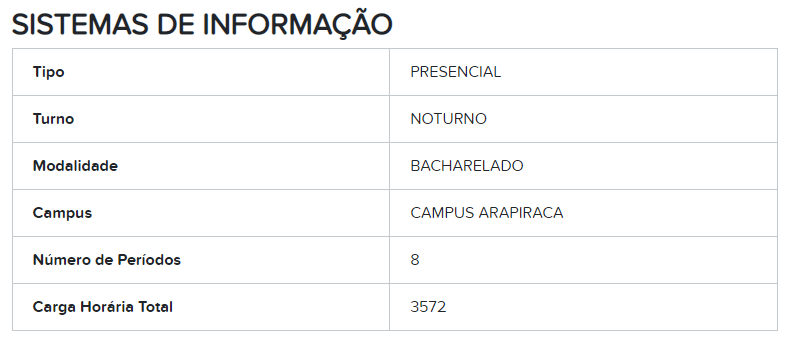

Informações do curso
Para mais informações, acesse: Cursos - SI
Informações
O curso de Sistemas de Informação forma profissionais capazes de administrar o fluxo de informações geradas e distribuídas por redes de computadores dentro e fora de uma organização. O aluno aprenderá a criar, adaptar e instalar programas que facilitam as consultas de dados, além de administrar redes de computadores. Ao final do curso, estará preparado para planejar, organizar e desenvolver sistemas de processamento, de armazenamento e de recuperação de dados, e poderá disponibilizar esse material para usuários de redes.
Saiba mais sobre Sistemas de InformaçãoPara mais informações, acesse: Cursos - SI